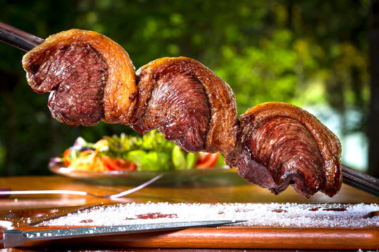

Churrasco

Descrição
Churrasco é carne bovina temperada com sal grosso e assada em espetos sobre fogo de lenha, carvão ou gás. Pode ser servida mal passada ou bem passada, dependendo da preferência. Ideal para encontros ao ar livre.
Ingredientes
- Carne bovina (costela, picanha, etc.)
- Sal grosso a gosto
Passo a passo
- Espete a carne em espetos
- tempere com sal grosso
- coloque sobre o fogo a uma distância de aproximadamente 25 cm.
- Para um churrasco no ponto ideal, retire quando estiver rosa no meio.